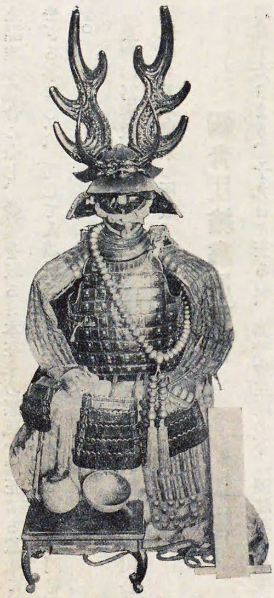

Honda Tadakatsu (本多忠勝, 17 de março de 1548 – 3 de dezembro de 1610) , também chamado de Honda Heihachirō (本多平八郎) foi um samurai , general e daimyo japonês do final do Sengoku durante os primeiros períodos Edo , que serviu a Tokugawa Ieyasu . Honda Tadakatsu foi um dos Quatro Reis Celestiais de Tokugawa (Shitennō) junto com Ii Naomasa , Sakakibara Yasumasa e Sakai Tadatsugu
Biografia
Tadakatsu nasceu em 1548, [2] em Kuramae, Nukata , província de Mikawa (atual Nishi-Kuramae, Okazaki , província de Aichi ), [3] o filho mais velho de Honda Tadataka. O clã Honda era uma das famílias mais antigas de Anjō fudai , uma família de fudai daimyo que servia Tokugawa Ieyasu desde que ele estava em Anjo .
Ieyasu o promoveu de daimyō /senhor do Domínio Ōtaki (100.000 koku ) para o Domínio Kuwana (150 000 koku ) como recompensa pelo seu serviço. [4] Além disso, seu filho Honda Tadatomo tornou-se daimyo de Ōtaki.
Em 1609, ele se aposentou e seu outro filho, Tadamasa , assumiu Kuwana. A filha de Tadakatsu, Komatsuhime, era a esposa legítima de Sanada Nobuyuki e mãe de Sanada Nobumasa , daimyō do Domínio de Matsushiro . Seu neto, Tadatoki , casou-se com a neta de Tokugawa Ieyasu, Senhime . Apesar de seus anos de serviço leal, Tadakatsu tornou-se cada vez mais distante do xogunato Tokugawa (bakufu) à medida que este evoluía de uma instituição política militar para uma instituição política civil. Este foi um destino compartilhado por muitos outros guerreiros da época, que não foram capazes de fazer a conversão da vida caótica de guerra do período Sengoku para a paz mais estável do xogunato Tokugawa.
A reputação da Honda era tal que atraiu a atenção das figuras mais influentes do Japão na época. Oda Nobunaga , que notoriamente não gostava de elogiar seus seguidores, chamou-o de "samurai entre os samurais". Além disso, Toyotomi Hideyoshi observou que os melhores samurais eram "Honda Tadakatsu no leste e Tachibana Muneshige no oeste". Até Takeda Shingen elogiou Honda, dizendo que “ele é um luxo de Tokugawa Ieyasu”. Foi amplamente reconhecido que ele era um samurai de renome e um fiel servidor de Tokugawa Ieyasu.
Tadakatsu é frequentemente referido como "O Guerreiro que superou a própria Morte" porque ele nunca sofreu um ferimento significativo, apesar de ser um veterano de mais de 57 batalhas no final de sua vida, [7] e porque nunca foi derrotado por outro samurai. . No teatro e em outras obras contemporâneas, Tadakatsu é frequentemente caracterizado como o oposto do outro grande general de Ieyasu, Ii Naomasa . Embora ambos fossem guerreiros ferozes dos Tokugawa, a capacidade de Tadakatsu de evitar ferimentos é frequentemente contrastada com a representação comum de Naomasa suportando muitos ferimentos de batalha, mas lutando contra eles.
Serviço sob Ieyasu
Honda Tadakatsu é geralmente considerado um dos melhores generais de Tokugawa Ieyasu e lutou em quase todas as principais batalhas de seu mestre. Ele ganhou distinção na Batalha de Anegawa (1570), ajudando na derrota dos exércitos dos clãs Azai e Asakura junto com o aliado de Tokugawa, Oda Nobunaga .
Tadakatsu também serviu na maior derrota de Tokugawa, a Batalha de Mikatagahara (1572), onde comandou a ala esquerda do exército de seu mestre, enfrentando tropas comandadas por um dos generais mais notáveis do clã Takeda, Naitō Masatoyo . [9] Embora a batalha tenha terminado em derrota, Honda Tadakatsu foi um dos generais Tokugawa presentes para se vingar dos Takeda na Batalha de Nagashino (1575). Honda comandou uma fileira de mosqueteiros quando as forças combinadas Oda-Tokugawa aniquilaram o exército de Takeda Katsuyori , em parte graças ao uso habilidoso de mosquetes classificados, enquanto disparavam em saraivadas ciclísticas. Um atirava enquanto outro recarregava e outro limpava o cano do mosquete. Isso permitiu que os mosquetes disparassem sem parar, destruindo efetivamente o exército Takeda. [10] Mais tarde, ele matou o general Takeda Okabe Motonobu no segundo Cerco de Takatenjin (1581) .
Seu melhor momento ocorreu na Campanha Komaki (1584). Deixado em Komaki enquanto Ieyasu partia para enfrentar as tropas Toyotomi em Nagakute, Tadakatsu observou um enorme exército sob o comando do próprio Hideyoshi sair em sua perseguição. Com um punhado de homens, Tadakatsu cavalgou e desafiou o exército Toyotomi da margem oposta do rio Shōnai . Diz-se que Toyotomi Hideyoshi (que superava Honda em até 50 ou 60 para 1) ficou impressionado com a bravura deste guerreiro e ordenou que nenhum mal acontecesse a ele, a seus homens ou a Ishikawa Yasumichi, que o acompanhou nesta tentativa. para ganhar tempo para Ieyasu.
Em 1590, Tadakatsu e Sakai Ietsugu capturaram o Castelo de Sakura e lutaram contra o clã Chiba, aliados dos Hōjō na província de Shimōsa , durante a campanha de Odawara .
Em 1600, Tadakatsu teve um papel importante na Batalha de Kuisegawa , onde resgatou com sucesso os oficiais Tokugawa Nakamura Kazuhide e Arima Toyouji , que foram emboscados pelos oficiais do Exército Ocidental Shima Sakon e Akashi Teruzumi .
Mais tarde, Honda Tadakatsu esteve presente na Batalha de Sekigahara , [11] quando as forças de Tokugawa Ieyasu derrotaram a Aliança Ocidental sob o comando do daimyō Ishida Mitsunari , permitindo que Tokugawa assumisse o controle do país, encerrando a era Sengoku.
Armadura e arma Tadakatsu

Armadura de Honda Tadakatsu, uma importante propriedade cultural do Japão , coleção particular, Museu Iyeyasu e Mikawa Bushi, Okazaki, província de Aichi
Tadakatsu parece ter sido uma figura colorida, em torno da qual surgiram algumas lendas - costuma-se dizer que de todas as batalhas em que serviu, ele nunca foi ferido. Seu capacete, famoso por ser adornado com chifres de veado, garantiu que ele fosse sempre uma figura reconhecível no campo de batalha. Seu cavalo era conhecido como Mikuniguro .
Lança Tonbokiri
Sua lança foi chamada de Tonbokiri ou Cortador de Libélula, porque a lenda afirmava que a ponta da lança era tão afiada que uma libélula que pousava nela era cortada em duas. Tonbokiri foi feito por Fujiwara Masazane. A habilidade de luta de Tadakatsu com ele foi tão grande que ficou conhecida como uma das “ Três Grandes Lanças do Japão ”.
Espada Nakatsukasa
Além desta lança incrível, Tadakatsu também utilizou a katana - Nakatsukasaa feita por Masamune (中務正宗), uma lâmina de 67 cm, outro tesouro nacional do Japão.